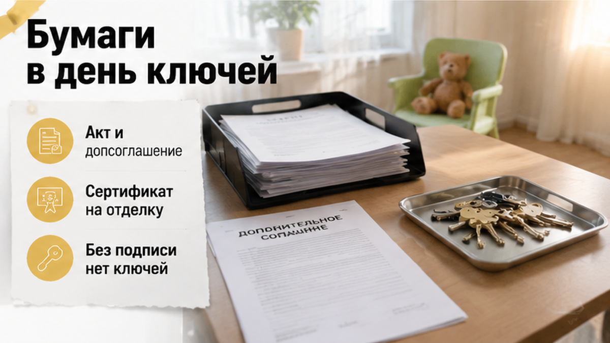
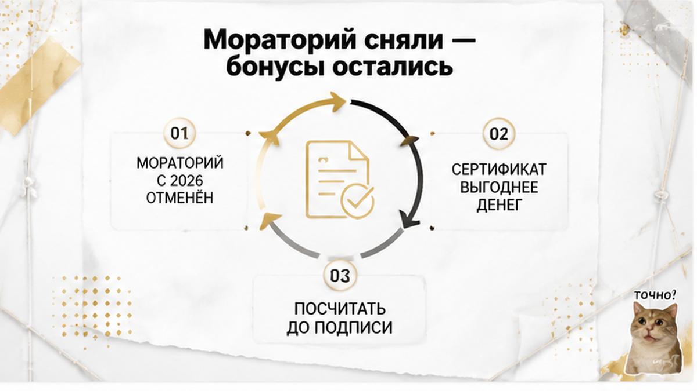

Ключи от новостройки на севере Тюмени семья получила почти на восемь месяцев позже той даты, что стояла в ДДУ, — а вместо денег за просрочку им положили на стол сертификат на отделку. Все эти восемь месяцев они платили дважды: ипотеку за квартиру, в которую нельзя войти, и аренду за ту, где жили втроём с ребёнком. В переговорной офиса продаж рядом с актом приёма-передачи лежало дополнительное соглашение на полторы страницы: застройщик даёт сертификат на отделку или бонус на кладовку, а дольщик подтверждает, что претензий по срокам не имеет. Номинал сертификата оказался заметно ниже того, что считается по закону, и закрыть им ни ипотечный платёж, ни аренду было нельзя. Менеджер сказал ровно, без нажима: «Без подписи ключи сегодня не оформим». Они подписали, уехали с ключами — и денег за просрочку не увидели ни в тот день, ни через месяц.
Меня зовут Святослав Шакин, я риэлтор в Тюмени, канал The Риэлтор. Расскажу изнутри, как это выглядит в комнате приёмки: по документам, а не по слухам. Покупаете новостройку и хотите заранее понимать, где вас попросят «просто подписать» — пишите в Telegram или в MAX.
В договоре стояла конкретная дата передачи квартиры. Не «планируемый срок ввода дома», а срок, когда ключи должны лежать у дольщика в руке.
Сначала сдачу подвинули на пару месяцев. Потом ещё. Потом появилась формулировка, знакомая каждому, кто ждал новостройку: «идёт устранение замечаний».
Семья ждала, потому что выбора не было. Ипотека уже платилась, съёмная квартира — тоже.
Вот это и есть двойная нагрузка, о которой в офисе продаж говорить не любят. Ипотечный платёж начинается не с ключей, а с того дня, когда банк выдал кредит и деньги ушли на эскроу-счёт. Жить нельзя — платить нужно. Как это ломается ещё на старте сделки, я разбирал отдельно: семейную ипотеку одобрили, а эскроу не открыли. Здесь картинка зеркальная: деньги на эскроу давно, платёж идёт восьмой месяц, а квартиры нет.
А теперь главное, чего почти никто не знает.
Когда застройщик присылает уведомление о переносе срока — дата в вашем договоре от этого не меняется. Ни на день.
По части 3 статьи 6 закона № 214-ФЗ застройщик обязан заранее предложить изменение договора. Предложить. А изменить срок можно только подписанным дополнительным соглашением — то есть волей обеих сторон.
Пока вы ничего не подписали, в ДДУ живёт старая дата. И просрочка считается именно от неё.
Письмо в почте — это не новый срок. Это предупреждение.
За просрочку закон даёт дольщику деньги: за каждый день — 1/150 ключевой ставки от цены договора. Тому, кто берёт квартиру для себя, а не для перепродажи бизнесом, положен так называемый двойной размер — это он и есть. Отсчёт идёт со дня, следующего за крайним сроком в договоре, и до дня фактической передачи по акту. Ключевая ставка с 27 июля 2026 года — 14,00% годовых.
Суммы выходят совсем не «бонусные». В иске к тюменскому застройщику при просрочке около пяти месяцев и цене квартиры 7,5 млн заявленная неустойка перевалила за миллион рублей. Оговорюсь честно: это заявленные требования, а не присуждённая сумма — суд вправе снизить её по статье 333 ГК РФ.
Бывает и жёстче, когда срок переносят сразу на год, а деньги лежат на эскроу мёртвым грузом: ключи от новостройки в Тюмени перенесли на год. В нашей истории ключи всё-таки выдали. Вопрос в том, чем за них расплатились.

Приёмку назначили на утро. Приехали втроём, с ребёнком и папкой документов, машина внизу уже с вещами.
В переговорной менеджер выложил стопку: акт приёма-передачи, смотровой лист и отдельно — допсоглашение на полторы страницы.
Про акт объяснили подробно: где дата, где замечания, куда подпись. Про допсоглашение — одной фразой: «Это по компенсации за задержку, всем подписываем».
В нём было два смысловых куска, и между ними — пропасть.
Первый: застройщик предоставляет сертификат — на отделку или, по выбору, бонус на кладовку. Второй: стороны признают, что все требования, связанные с нарушением срока передачи, урегулированы, и дольщик претензий не имеет.
Первый выглядит как подарок. Второй закрывает право на деньги.
Дальше пошло то, что я вижу в таких комнатах постоянно. Сначала мягко: «Сертификат сгорает, если не оформить сегодня». Потом жёстче: «Без подписи ключи не оформим, приезжайте, когда специалист освободится».
Ребёнок устал. К обеду на работу. Вещи в машине.
В такой обстановке люди читают не текст, а лица напротив. Обычный дольщик в этот момент ищет, где подписать, чтобы наконец подняться на свой этаж. Тот, кто ходит на приёмки по работе, делает ровно одно движение — откладывает допсоглашение в сторону и просит паузу.
Механика узнаваемая: в офисе просят подписать «новый пакет», иначе сделка встанет. Я уже описывал такую сцену, когда застройщик сменил юрлицо и прислал дольщикам новый ДДУ. Срочность, усталость и стол, за которым неудобно сказать: «Я возьму паузу и покажу юристу».
Ключи в тот день семья получила. Подписи, конверт, лифт, свой этаж, пустые стены и эхо.
А денег за восемь месяцев ожидания не увидела ни тогда, ни через месяц.
Сертификат пришёл. Номинал заметно ниже того, что выходит по закону, срок действия ограничен, подрядчики — из списка застройщика.
Ипотечный платёж в том же месяце списался как обычно. Аренда за последний месяц была оплачена вперёд. Ни то, ни другое сертификатом не закрыть: им платят только за отделку или за бонусную кладовку.
Посчитать, что семья отдала, можно прямо на салфетке.
По статье 6 закона 214-ФЗ человеку, который берёт квартиру для себя, неустойку считают в двойном размере: цена договора × 1/150 ключевой ставки × число дней просрочки. При цене около 6,5 млн рублей, просрочке примерно в 243 дня и ставке 14% годовых выходит порядка 1,47 млн рублей.
Это иллюстрация, а не обещание. Суд вправе снизить неустойку по статье 333 Гражданского кодекса и на практике часто снижает.
Но даже после снижения это деньги совсем другого порядка, чем типовые сертификаты застройщиков — в обзорах рынка они встречаются в вилке 200–400 тысяч рублей.
И вот что важно не перепутать.
Сам акт приёма-передачи право требовать неустойку за прошедшие месяцы не отменяет. Опасность не в акте.
Опасность в соседней бумаге и в трёх строчках внутри неё: «претензий к застройщику не имею», «стороны урегулировали все взаимные требования», «компенсация является полной и окончательной».
Вот эта строчка и превращает законную неустойку в подарочный сертификат. Добровольно. Вашей же рукой.
Что теперь делать семье — разговор небыстрый. Срок исковой давности три года, время у них есть. Но спорить придётся уже не о просрочке, которая видна из двух дат, а о том, что означает подписанное соглашение.
Для сравнения: в Тюмени в августе 2026 года подавали иск к застройщику, где при просрочке около пяти месяцев и цене квартиры 7,5 млн заявили неустойку свыше миллиона рублей. Это заявленные требования, а не присуждённая сумма.
Кто-то в похожей истории получает перенос сдачи на год и деньги, замороженные на эскроу, кто-то — сертификат вместо неустойки. Финалы разные, а точка выбора у всех одна: подпись в день ключей.
Вот здесь мне правда интересно ваше мнение. После такой просрочки вы бы взяли сертификат на отделку вместо неустойки по ДДУ — или потребовали деньги через суд?
Неустойка по закону о долевом строительстве — это деньги. Не работы, не мебель, не скидка у знакомого подрядчика.
Это сумма за каждый день просрочки, и считают её от цены договора по ключевой ставке Банка России. С 27 июля 2026 года ставка — 14% годовых. Отсчёт идёт со дня, следующего за крайним сроком передачи в договоре, и до даты фактической передачи по акту.
Сертификат живёт по другой логике. Это обещание застройщика или его партнёра дать вам товар или услугу: отделку, кухню, кладовку, место на парковке.
Направить его на ипотечный платёж нельзя. На аренду тоже нельзя. А именно эти две строки и жгли семейный бюджет все восемь месяцев.
Польза от сертификата держится на трёх вещах: номинал, срок действия и нужен ли вам этот товар вообще — сейчас и именно у этого подрядчика. Если из трёх сходится одна, это не компенсация, а акция отдела продаж.
И ещё нюанс. Сертификат на отделку юридически не то же самое, что договор на отделку, приложенный к ДДУ. Если кладовка вписана в договор и оплачена, у вас есть требование по договору. Если кладовка обещана бонусом по сертификату — у вас есть бумага от отдела продаж.
Отдельно держите в голове: письмо о переносе срока договор не переписывает. По части 3 статьи 6 закона 214-ФЗ дату меняет только подписанное допсоглашение, то есть ваша подпись. Пришло уведомление — срок в ДДУ прежний, просрочку считают от него.
И про убытки честно. Аренда, которую вы платили, пока ждали ключи, — это не неустойка, а самостоятельное требование: доказывать придётся и размер, и связь с нарушением. Что суд закроет вам всю аренду и всю ипотеку, не пообещает ни один честный специалист.
В день ключей вам дают не бумагу. Вам дают пачку.
Одну можно подписать спокойно. Другая закрывает деньги за восемь месяцев ожидания. Лежат они рядом, и менеджер листает их одним и тем же движением.
Поэтому разложите пачку по смыслу — до подписи, а не после.
| Что положили на стол | На что смотреть | Что означает ваша подпись |
|---|---|---|
| Уведомление о переносе срока | Это односторонняя бумага застройщика | Сама по себе ничего не меняет: срок в договоре прежний |
| Допсоглашение о переносе срока | Новая дата передачи и период, который она «закрывает» | Срок вы меняете своей волей. Требование за отрезок между старой и новой датой можно потерять |
| Акт приёма-передачи | Фактическая дата передачи и список замечаний по квартире | Право на неустойку за прошедшую просрочку не отменяет, но именно от этой даты считают её конец |
| Соглашение о компенсации / сертификат | Фразы «претензий не имею», «стороны урегулировали все требования» | Вот здесь и закрываются деньги. Это отказ от требований, а не бонус к ним |
Дальше — счёт на салфетке.
Сверяете дату передачи в ДДУ с фактической датой в акте. Это ваш период просрочки, и он виден из двух цифр.
Считаете по статье 6 закона № 214-ФЗ: цена договора × 1/150 × ключевая ставка × число дней. С 27 июля 2026 года ставка — 14,00% годовых. Механически её не подставляют: в конкретном споре смотрят на дату передачи и условия договора.
Полученную цифру сравниваете с номиналом сертификата. И только потом решаете, подписывать ли соглашение о компенсации.
Претензию с расчётом лучше направить до подписания акта. И сохранить всё: ДДУ, уведомления, переписку, проект допсоглашения, акт, бумаги по аренде.
Это ориентиры, а не готовый иск. Суд вправе снизить неустойку по статье 333 ГК РФ. Аренда и переплата по ипотеке — отдельные требования, их надо доказывать. Срок давности три года, так что «уже поздно» через месяц после ключей не бывает.
И держите в голове одну подмену: сертификат на отделку — не то же самое, что договор на отделку, приложенный к ДДУ. Похожая путаница выходит с метрами вне квартиры: оплаченная по ДДУ кладовка, которой на ключах не оказалось, — разбирал отдельно. Здесь ту же кладовку предлагают уже бонусом вместо денег.
Разбираю такие бумаги по новостройкам Тюмени в своих каналах — коротко и без юридического тумана: Telegram, MAX. Если срок в вашем ДДУ уже прошёл — напишите, посмотрим на даты вместе.

Есть контекст, который объясняет и сертификаты, и напор менеджера.
С 1 января 2026 года мораторий на начисление новой неустойки за просрочку отменён.
Отдельно живёт другая мера: по требованиям, заявленным до 1 января 2026 года, исполнение решений может быть отложено до 31 декабря 2026 года.
Две разные вещи. В офисе продаж их склеивают в одно короткое: «вам всё равно ничего не начислят».
Начислят.
Для застройщика денежная неустойка снова стала реальным риском — и сертификат ему выгоднее живых денег.
Цифры рядом. По ЖК «Сикрет Плэйс» в августе 2026 года передачу перенесли на март 2027 года. К тюменскому ООО «СЗ «Партнер-Строй»» в августе 2026-го подан иск с заявленной неустойкой свыше миллиона рублей — просрочка около пяти месяцев, цена квартиры 7,5 млн. Это заявленные требования, а не присуждённая сумма.
Вот этот разброс и объясняет, почему торг в переговорной идёт в пользу того, кто первым назвал сумму. Похожее давление допсоглашением я описывал в истории, где застройщик сменил юрлицо и прислал дольщикам новый ДДУ.
Что забрать на свой день ключей — совсем немного.
Не подписывать соглашение о компенсации в комнате, пока не посчитали просрочку от даты в ДДУ до даты акта. Отказ менять деньги на сертификат — это не отказ от квартиры.
Звучит «без подписи ключи не оформим»? Спокойно попросите изложить это письменно и возьмите паузу до вечера. Бумага с таким требованием работает на вас. Устное «мы не выдадим» — ни на кого.
Та тюменская семья ключи получила. Разница между ними и следующим дольщиком одна: следующий войдёт в переговорную, уже зная, сколько стоят его восемь месяцев, и положит расчёт на стол рядом с допсоглашением.
Если вы сейчас тянете ипотеку и аренду одновременно — посчитайте просрочку сегодня, а не в день выдачи. Двойная нагрузка обычно начинается раньше: с истории, когда семейную ипотеку одобрили, а эскроу не открыли.